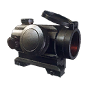
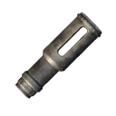
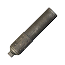
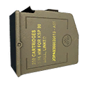

Damage by ammo and quality
The first table lists each ammo type the weapon can load. Damage is one projectile at the base value (Special quality), Armour and Comp. multiply it when the projectile hits an armour plate or a component, and Falloff is how the damage drops over distance. The second table works out one whole shot (damage × pellets × the quality multiplier) for every quality, at close range and before the difficulty setting.
| Ammo | Damage | Pellets | Armour | Comp. | Falloff / range |
|---|---|---|---|---|---|
5.56mm Full Metal Jacket Ammoequipment_ammo_556_fmj_01 | 20 | 1 | ×1 | ×1 | drops to 60% by ~550 m max 1,000 m |
5.56mm Armor-Piercing Ammoequipment_ammo_556_ap_01 | 20 | 1 | ×1.25 | ×0.75 | drops to 60% by ~550 m max 1,000 m |
| Ammo | Q1 | Q2 | Q3 | Q4 | Q5 | Q5 vs armour | Q5 vs components |
|---|---|---|---|---|---|---|---|
| 5.56mm Full Metal Jacket Ammo | 11 | 13.8 | 16.4 | 19.2 | 22 | 22 | 22 |
| 5.56mm Armor-Piercing Ammo | 11 | 13.8 | 16.4 | 19.2 | 22 | 27.5 | 16.5 |
| Quality | Dilapidated | Worn | Good | Exceptional | Special | Experimental |
|---|---|---|---|---|---|---|
| Damage multiplier | ×0.55 | ×0.69 | ×0.82 | ×0.96 | ×1.1 | ×1 |
- A Dilapidated copy does 50% of the damage of a Special one (×0.55 against ×1.1), so upgrading quality is a straight damage increase.
- Against armour plates, 5.56mm Armor-Piercing Ammo is best (×1.25 damage to armour).
Experimental ammo of this calibre
The game files flag these rounds as experimental-only: they are for the experimental version. The column shows one shot at the experimental multiplier (×1).
| Ammo | Damage | Pellets | Armour | Comp. | Falloff / range | Effects |
|---|---|---|---|---|---|---|
5.56mm Corrosive Ammo Exp. onlyequipment_ammo_556_alpha_01_q6 | 20 | 1 | ×1.5 | ×0.5 | drops to 60% by ~550 m max 1,000 m | Over time: 6 every 4 s for 2 s to players and people |
5.56mm HEAT Ammo Exp. onlyequipment_ammo_556_beta_01_q6 | 20 | 1 | ×0 | ×2 | drops to 60% by ~550 m max 1,000 m | Special effect not included (it lives in a separate effect file). |
| Ammo | Q6 | Q6 vs armour | Q6 vs components |
|---|---|---|---|
| 5.56mm Corrosive Ammo | 20 | 30 | 10 |
| 5.56mm HEAT Ammo | 20 | 0 | 40 |
Experimental versionExperimental Kvm 89

Experimental Kvm 89 is the Experimental version of this weapon. Its damage multiplier is ×1 (Special: ×1.1). Item ID 637455940. See experimental weapons for how they work.
The game files give the experimental version its own versions of 4 ammo types. These replace the normal values when fired from it. The damage column is one shot at the experimental multiplier (×1).
| Ammo (change from normal) | Damage | Pellets | Q6 | Armour | Comp. | Effects |
|---|---|---|---|---|---|---|
5.56mm Corrosive Ammoequipment_ammo_556_alpha_01_exp_kvm89falloff drops to 60% by ~550 m → drops to 90% by ~1000 m | 20 | 1 | 20 | ×1.5 | ×0.5 | Over time: 6 every 4 s for 2 s to players and people |
5.56mm Armor-Piercing Ammoequipment_ammo_556_ap_01_exp_kvm89falloff drops to 60% by ~550 m → drops to 90% by ~1000 m | 20 | 1 | 20 | ×1.25 | ×0.75 | – |
5.56mm HEAT Ammoequipment_ammo_556_beta_01_exp_kvm89falloff drops to 60% by ~550 m → drops to 90% by ~1000 m | 20 | 1 | 20 | ×0 | ×2 | – |
5.56mm Full Metal Jacket Ammoequipment_ammo_556_fmj_01_exp_kvm89falloff drops to 60% by ~550 m → drops to 90% by ~1000 m | 20 | 1 | 20 | ×1 | ×1 | – |
Attachments4 fit
Every attachment the item table lists as compatible with this weapon (its compatibility list contains the weapon's ToolID 29). Attachments have qualities of their own; vision modules come in one quality only.
| Attachment | Type | Qualities | Nickname | |
|---|---|---|---|---|
 | Red Dot x2 Sight | Scopes | Q1 Q2 Q3 Q4 Q5 | x2 |
 | Machine Gun Compensator | Compensators | Q1 Q2 Q3 Q4 Q5 | MGC |
 | Machine Gun Silencer | Silencer | Q1 Q2 Q3 Q4 Q5 | MGS |
 | Kvm 89 Extended Mag | Magazines | Q1 Q2 Q3 Q4 Q5 | 89M |
Augments24 of 28 fit
Augments go into slots that depend on quality. Following the in-game rules (as the Gen0 Editor applies them): Worn and Good weapons take one Primary augment, Exceptional and Special take a Primary and a Support augment, and Dilapidated and experimental weapons take none. A ✓ means the augment fits this weapon at that quality; the rules come from the game's equipment compatibility table (augments.json).
Primary augments
| Augment | Worn | Good | Exceptional | Special | Restriction | |
|---|---|---|---|---|---|---|
 | Acidic | ✓ | ✓ | ✓ | ✓ | – |
 | Adhesive Rounds | ✓ | ✓ | ✓ | ✓ | – |
 | EMP Detonation | ✓ | ✓ | ✓ | ✓ | – |
 | Health Stealing | ✓ | ✓ | ✓ | ✓ | – |
 | Machine Disarmer | ✓ | ✓ | ✓ | ✓ | – |
 | Prone Specialization | ✓ | ✓ | ✓ | ✓ | Melee weapons cannot use this augmentation. |
 | Rapid Reload | ✓ | ✓ | ✓ | ✓ | Melee weapons cannot use this augmentation. |
 | Scorching | ✓ | ✓ | ✓ | ✓ | Explosive weapons cannot use this augmentation. |
 | Sharpshooter | ✓ | ✓ | ✓ | ✓ | Melee weapons and explosive weapons cannot use this augmentation. |
 | Small Fryer | ✓ | ✓ | ✓ | ✓ | – |
 | Structure Destructor | ✓ | ✓ | ✓ | ✓ | – |
 | Titan Toppler | ✓ | ✓ | ✓ | ✓ | – |
 | Unstoppable Shells | ✓ | ✓ | ✓ | ✓ | Melee weapons and explosive weapons cannot use this augmentation. |
 | Uranium Infused | ✓ | ✓ | ✓ | ✓ | – |
Don't fit: Final Round (Only handguns can use this augmentation.); Trick Shot Master (Only shotguns and melee weapons can use this augmentation.)
Support augments
| Augment | Exceptional | Special | Restriction | |
|---|---|---|---|---|
 | Crouching Tiger | ✓ | ✓ | Melee weapons cannot use this augmentation. |
 | Hip Shooter | ✓ | ✓ | Melee weapons cannot use this augmentation. |
 | Hit and Run | ✓ | ✓ | – |
 | Oversized Magazine | ✓ | ✓ | Melee weapons and explosive weapons cannot use this augmentation. |
 | Quick Learner | ✓ | ✓ | – |
 | Scope Scout | ✓ | ✓ | Only weapons that can have a scope attached can use this augmentation. |
 | Skilled Spotter | ✓ | ✓ | – |
 | Slow and Steady | ✓ | ✓ | Melee weapons cannot use this augmentation. |
 | Sound Muffling | ✓ | ✓ | – |
 | Stabilization | ✓ | ✓ | Melee weapons cannot use this augmentation. |
Don't fit: Flurry of Blows (Only melee weapons can use this augmentation.); Power Attacker (Only melee weapons can use this augmentation.)
Skins3
Skins change only the look. All skins: weapon skins.
 Party Pop Bright
Party Pop Bright Street Art - Kvm 89
Street Art - Kvm 89Item IDs
The item hash of each quality, as save editors and the Gen0 Editor use them. Each quality is a separate item in the game's item table.
| Quality | Item ID | Icon |
|---|---|---|
| Dilapidated | 862304831 |  |
| Worn | 3522034483 | |
| Good | 2700579659 | |
| Exceptional | 269593219 | |
| Special | 1115833621 | |
| Experimental | 637455940 | |
Where to find it
The world files place 6 copies of the Kvm 89 Squad Automatic Weapon at fixed spots (on top of the random weapon crates). Each spot has a fixed quality; this table counts them by region.
| Region | Dilapidated | Worn | Good | Total |
|---|---|---|---|---|
| Marshlands | 1 | – | 1 | 2 |
| North Coast | 2 | – | – | 2 |
| Himfjäll (Alpine Unrest) | – | 1 | 1 | 2 |
| Total | 3 | 1 | 2 | 6 |
The map opens on part of the 6 spots; zoom out (−) or drag to see the rest, use the table, or open the full map.
Every spot, with the nearest named map location and its distance. Coordinates are the game's world x / z, as on the interactive map.
| Quality | Region | Nearest location | Distance (m) | x | z |
|---|---|---|---|---|---|
| Good | Marshlands | Norrmyra Artillery Base | 120 | -2,426 | -3,195 |
| Good | Himfjäll (Alpine Unrest) | Digerhällen Artillery Base | 62 | 5,414 | 87 |
| Worn | Himfjäll (Alpine Unrest) | FOA 4 Bunker - "Bergfinken" | 61 | 4,452 | -780 |
| Dilapidated | Marshlands | Landing Zone: Calina | 47 | -2,664 | -3,362 |
| Dilapidated | North Coast | Soviet Trenches | 37 | 1,861 | -3,428 |
| Dilapidated | North Coast | Ekebygården | 26 | 2,104 | -3,771 |
Ammo and related weapons
Ammo it loads: 5.56mm Full Metal Jacket Ammo, 5.56mm Armor-Piercing Ammo.
Experimental-only rounds (for the experimental version): 5.56mm Corrosive Ammo, 5.56mm HEAT Ammo.
Other weapons that load the same ammo: Automatgevär 5, N16 Assault Rifle.
Other machine guns: Kvm 59 Machine Gun, N144 Minigun, PM-71 Machine Gun, N60 Machine Gun.